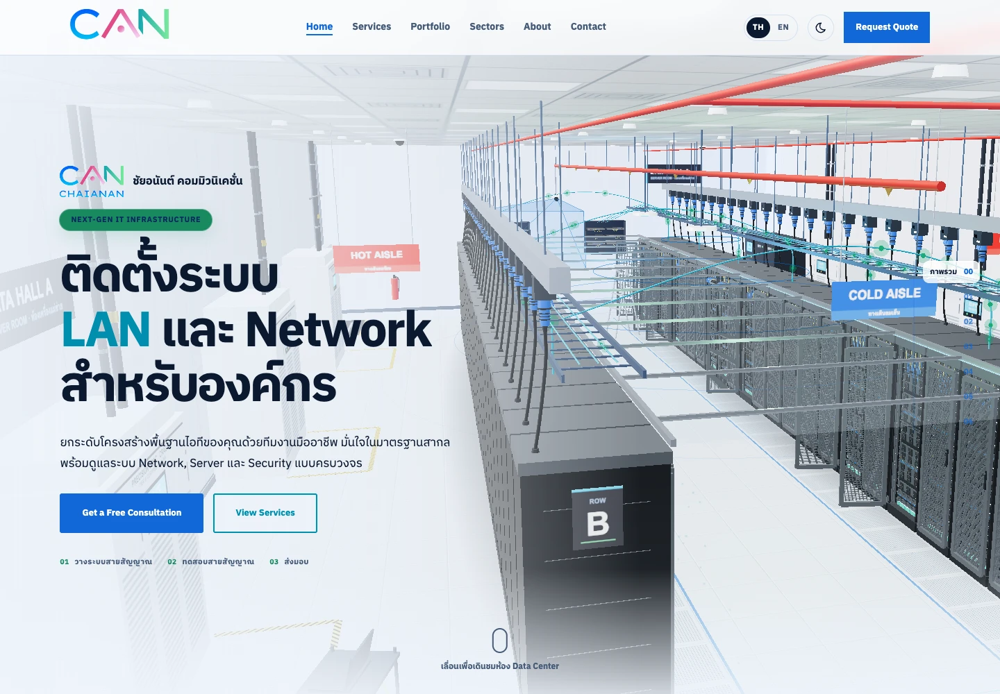
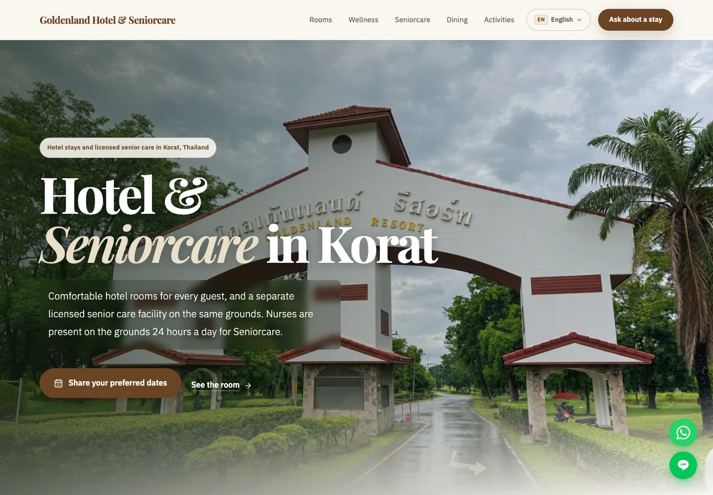
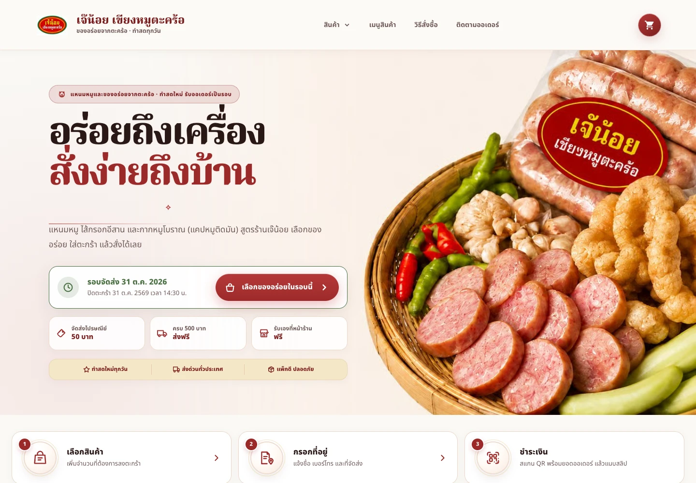

Inventory reporting
Organize stock movement, low-stock exposure, and follow-up priorities into a view that is easier to review.
I’m Nattapart Worakun, a chemist-turned-developer working across business websites, data dashboards, and workflow automation. I build tools that make everyday work easier.
Bangkok, Thailand · Web development · Data · Automation

Infrastructure & interactive 3D

Hospitality & senior care

E-commerce storefront
Real businesses. Live websites. Built to be used.
Explore all workAn illustrative portfolio project built with modeled inventory data. It brings operational signals into one place so teams can spot risk and prioritize follow-up.
PROJECT SNAPSHOT
Designed around stock cover, turnover, dead stock, demand versus usage, and reorder signals—with a weekly summary to guide the next review.
Portfolio demonstration using modeled data; the figures describe project scope, not measured business results.
View the dashboardClear views, dependable reporting, and less friction between data and the next decision.
Organize stock movement, low-stock exposure, and follow-up priorities into a view that is easier to review.
Connect operational questions to focused KPI definitions, data models, and Power BI dashboard views.
Make recurring spreadsheet and reporting tasks more consistent with reusable data flows and practical automation.
Built through hands-on projects across reporting, analytics, and application work.
Loading selected certificates…